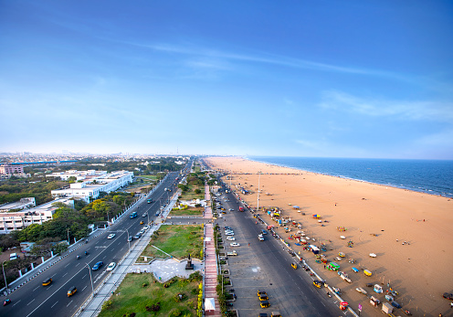
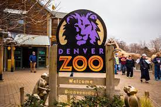
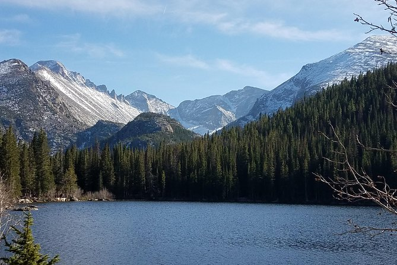
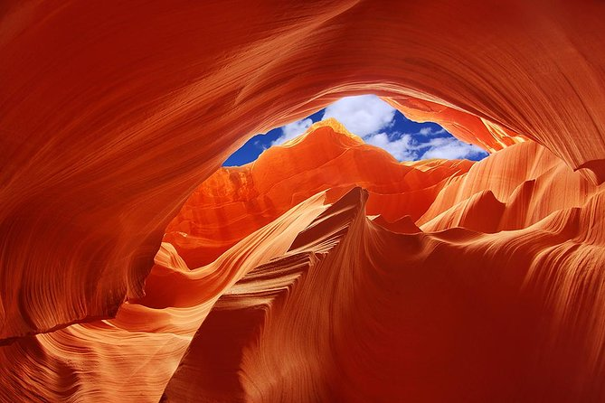
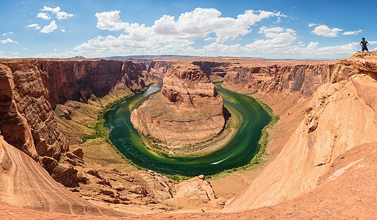

TOP 3 CITIES I LIKE
CHENNAI
Chennai is formerly known as Madras[A] (the
official name until 1996), is the capital city of the Indian state of Tamil Nadu. The state's largest city
in area and population as well, Chennai is located on the Coromandel Coast of the Bay of Bengal, and is the
most prominent cultural, economic and educational centre of South India.
some of the tourist place in chennai are:
- Marina Beach
- Valluvar Kottam
- Thousand Lights Mosque
- Elliot’s Beach
- Connemara Public Library
- kapaleeswarar Temple
- Sri Parthasarathy Temple
- Guindy National Park
1.Marina beach
Marina Beach, or simply the Marina, is a natural urban beach in Chennai, Tamil Nadu, India, along the Bay of
Bengal.[1] The beach runs from near Fort St. George in the north to Foreshore Estate in the south, a distance of
6.0 km (3.7 mi),[2] making it the second longest urban beach in the world, after Cox's Bazar Beach.[3][4][5] It
is a prominent landmark in Chennai.
The Marina is a primarily sandy beach, with an average width of 300 m (980 ft)[6] and the width at the widest
stretch is 437 m (1,434 ft). Bathing and swimming at the Marina are legally prohibited because of the dangers,
as the undercurrent is very turbulent. It is one of the most crowded beaches in the country and attracts about
30,000 visitors a day during weekdays[7] and 50,000 visitors a day during the weekends and on
holidays.[8][9][10] During summer months, about 15,000 to 20,000 people visit the beach daily


2. Valluvar kottam
Valluvar Kottam is located at the intersection of the Kodambakkam
High road and the Village road in Nungambakkam neighbourhood of Chennai.[2] The monument now stands at what was
once the deepest point of a local lake called the Nungambakkam lake.[1][3]

DENVER
Denver, the capital of Colorado, is an American
metropolis dating to the Old West era. Larimer Square, the city’s oldest block, features landmark
19th-century buildings. Museums include the Denver Art Museum, an ultramodern complex known for its
collection of indigenous works, and the mansion of famed Titanic survivor Molly Brown. Denver is also a
jumping-off point for ski resorts in the nearby Rocky Mountains
some of the tourist place in Denver are:
- Denver zoo
- Rocky mountain
- Denver botanical garden
1.Denver zoo
Denver Zoo is an 80-acre nonprofit zoological garden located in City
Park of Denver, Colorado, United States. Founded in 1896, it is operated by the Denver Zoological Foundation and
funded in part by the Scientific and Cultural Facilities District in addition to ticket sales and private
donations.

2.Rocky mountains
The Rocky Mountains formed 80 million to 55 million years ago during
the Laramide orogeny, in which a number of plates began sliding underneath the North American plate. The angle
of subduction was shallow, resulting in a broad belt of mountains running down western North America.

ARIZONA
Page, Center of the Grand Circle
Page is a small town in northern Arizona located on the southern shores of magnificent Lake Powell. Our
friendly community offers visitors outstanding recreation and a wide variety of lodging and services.
- Lower antelope canyon
- lake Powell
- Horse shoe bend
1. Lower antelope canyon
Navajo Upper Antelope Canyon is a slot canyon in the American
Southwest, on Navajo land east of Lechee, Arizona. It includes five separate, scenic slot canyon sections on the
Navajo Reservation, referred to as Upper Antelope Canyon (or The Crack), Rattle Snake Canyon, Owl Canyon,
Mountain Sheep Canyon and Lower Antelope Canyon (or The Corkscrew).[2] It is the primary attraction of Lake
Powell Navajo Tribal Park, along with a hiking trail to Rainbow Bridge National Monument.

2. horse shoe bends
Horseshoe Bend is a horseshoe-shaped incised meander of the Colorado
River located near the town of Page, Arizona, United States.[1] It is also referred to as the "east rim of the
Grand Canyon."[2]
Horseshoe Bend is located 5 miles (8 km) downstream from the Glen Canyon Dam and Lake Powell within Glen Canyon
National Recreation Area, about 4 miles (6 km) southwest of Page.[1][3]
